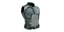
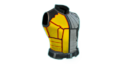
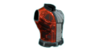
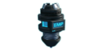

装备 (LWOTC)
在Long War of the Chosen中，士兵装备系统相较原版有所改动:
- 每名士兵初始拥有 3 个工具槽位。
- 每装备一件物品都会使机动性降低 1 点。
- 初始物品数量无限，无需单独购买。
- 榴弹对单个士兵没有携带数量上限，但投掷后会有 1 回合的冷却时间。
- 榴弹兵拥有一个额外的榴弹专用槽位，装备后同样会降低机动性，并且他们发射榴弹时不受冷却时间限制。
防护装备
这些物品通过多种方式提升士兵的生存能力。士兵同一时间只能携带一件护板类物品和一件背心类物品。
护板
这些物品提供可消耗生命值（护盾），一旦损失，在任务中无法被治疗，但其损失不会被视为受伤，也不会在战斗结束后产生恢复时间。士兵一次只能装备一件护板。
| 名称 |
生命值加成 |
前置条件 |
消耗 |
黑市价值 |
|
|---|---|---|---|---|---|
|
合金 |
尸体 |
||||

陶瓷护甲 |
+2 护盾 | XCOM 初始拥有无限供应 | |||
|
合金护甲 |
+3 护盾 | 合金护甲 | 1 | 1x 变种人士兵尸体 | 5 |
|
壳质护甲 |
+4 护盾 | 壳质护甲 | 2 | 1x 寄生兽尸体 | 10 |
|
甲壳护甲 |
+5 护盾 | 甲壳护甲 | 3 | 1x 异变者精英尸体 | 12 |
背心
这些物品提供额外生命值并附带一个额外能力。士兵一次只能装备一件背心。
| 名称 |
生命值加成 |
特殊属性 |
前置条件 |
消耗 |
黑市价值 |
|||
|---|---|---|---|---|---|---|---|---|
|
补给 |
合金 |
超铀水晶 |
尸体 |
|||||
|

纳米背心 |
2 | -10 被暴击几率 | 混合材料 | 5 | 1 | 0 | - | 5 |
|

生化防护背心 |
3 | 免疫火、酸和毒 | 生化防护背心 | 15 | 1 | 0 | - | 5 |
|
战术背心 |
3 |
+1 护甲
-25 被暴击几率 |
战术背心 | 20 | 2 | 0 | 1x 异变者尸体 | 10 |

静滞背心 |
5 | 每回合恢复 2 点生命值，最多恢复 8 点 | 静滞背心 | 20 | 2 | 2 | 1x 变种人持盾者尸体 | 10 |
|

地狱网背心 |
6 | 对近战攻击者造成 2–4 点伤害并施加燃烧效果 | 地狱网 | 30 | 3 | 3 | 1x 狂战士尸体 | 15 |

变色龙背心 |
1 |
+5 闪避
减少士兵的 渗透时间 |
变色龙背心 | 25 | 0 | 2 | 1x 无面怪尸体 | 8 |
榴弹
榴弹可由任何职业携带，但 榴弹兵 在使用它们方面尤为擅长：他们可以通过榴弹发射器以更远的射程和更大的爆炸半径发射榴弹，拥有一个只能用于榴弹的额外装备槽位，并且还拥有进一步提升榴弹效果的技能。
| 名称 |
伤害 |
射程 |
声音范围 |
直径 |
特殊属性 |
前置条件 |
消耗 |
黑市价值 |
||||
|---|---|---|---|---|---|---|---|---|---|---|---|---|
|
补给 |
合金 |
超铀水晶 |
超铀核心 |
尸体 |
||||||||
|
破片榴弹 |
2-5 | 10 | 24 | 3 |
9 环境伤害
撕碎 1 护甲 |
XCOM 初始拥有无限供应 | ||||||

电浆榴弹 |
4-8 | 10 | 24 | 3 |
9 环境伤害
撕碎 2 护甲 |
电浆榴弹 | 10 | 1 | 0 | 1 | - | 5 |
|
成型炸药 |
- | 3 | 33 | 2 | 100 环境伤害 | - | 10 | - | - | - | - | - |
|
闪光榴弹 |
- | 12 | 9 | 5 | 混乱敌人 | XCOM 初始拥有无限供应 | ||||||
|
烟雾榴弹 |
- | 15 | 9 | 5 | 在烟雾中获得 +20 防御，并抵消侧翼攻击加成 | XCOM 初始拥有无限供应 | ||||||

烟雾炸弹 |
- | 15 | 9 | 6 | 在烟雾中获得 +20 防御，并抵消侧翼攻击加成 | 烟雾炸弹 | 10 | - | - | - | - | 10 |

战场扫描器 |
- | 28 | - | 12 |
侦测区域内的敌人
揭露伪装的 无面怪 和潜地的 寄生兽 |
战场扫描器 | 10 | 0 | 1 | 0 | 1x 变种人士兵尸体 | 5 |

火焰榴弹 |
4-9 | 10 | 24 | 1 | 75% 几率使敌人和地形燃烧 | 火焰榴弹 | 10 | 1 | - | 1 | 1x 变种人净化者尸体 | 5 |
|
火焰炸弹 |
4-9 | 10 | 24 | 2 | 85% 几率使敌人和地形燃烧 | 火焰炸弹 | 20 | 1 | 2 | 1 | 2x 变种人净化者尸体 | 15 |
|
酸性榴弹 |
1-2 | 10 | 24 | 1 |
撕碎 2 护甲
施加撕裂效果（1 点） 生成酸液池，对其中的敌人施加酸蚀效果 |
酸性榴弹 | 10 | 1 | - | 1 | 1x 幽灵尸体 | 5 |

酸性炸弹 |
1-3 | 10 | 24 | 2 |
撕碎 3 护甲
施加撕裂效果（2 点） 生成酸液池，对其中的敌人施加酸蚀效果 |
酸性炸弹 | 20 | 1 | 2 | 1 | 2x 幽灵尸体 | 15 |

毒气榴弹 |
1-3 | 10 | 20 | 5 |
生成毒气云，使其中的敌人中毒
无视护甲 |
毒气榴弹 | 10 | 1 | - | 1 | 1x 毒蛇怪尸体 | 5 |

毒气炸弹 |
1-4 | 10 | 20 | 6 |
生成毒气云，使其中的敌人中毒
无视护甲 |
毒气炸弹 | 20 | 1 | 2 | 1 | 2x 毒蛇怪尸体 | 15 |
|

EMP榴弹 |
4-8 | 12 | - | 4 |
仅对机械单位造成伤害
降低 10 点侵入防御 无视护甲 移除部分能量护盾 使机械单位陷入混乱 33% 几率使机械单位瘫痪 |
EMP榴弹 | 10 | 1 | - | 1 | 1x 变种人炮塔残骸 | 5 |
|
EMP炸弹 |
6-12 | 12 | - | 5 |
仅对机械单位造成伤害
降低 15 点侵入防御 无视护甲 移除部分能量护盾 使机械单位陷入混乱 50% 几率使机械单位瘫痪 |
EMP炸弹 | 20 | 1 | 2 | 1 | 2x 变种人炮塔残骸 | 15 |
|
感应式地雷 |
4-9 | 14 | - | 3 |
当敌人进入爆炸半径时引爆
9 点环境伤害 撕碎 1 护甲 |
感应式地雷 | 40 | - | 10 | 1 | 1x 破坏者残骸 | 15 |
|
拟态信标 |
- | 10 | - | 1 |
生成一个诱饵士兵
大部分敌人会更倾向于攻击诱饵，而不是你的其他士兵 |
拟态信标 | 60 | - | - | 1 | 1x 看门人外壳 | 50 |
|
寒霜炸弹 |
- | 10 | 20 | 2 | 冰冻敌人 | 寒霜炸弹 | 30 | - | - | - | - | - |
特殊弹药
特殊弹药可以装备在士兵身上，在使用主武器或已装备的手枪射击时提供额外效果。士兵一次只能装备一种弹药。
| 名称 | 效果 |
前置条件 |
消耗 |
黑市价值 |
||||
|---|---|---|---|---|---|---|---|---|
|
补给 |
合金 |
超铀水晶 |
超铀核心 |
尸体 |
||||

穿甲弹 |
射击无视 2 点护甲。 | 外星生化技术 | 10 | 1 | 0 | 0 | - | 5 |

曳光弹 |
射击获得 +5 点命中 | 混合材料 | 10 | 0 | 1 | 0 | - | 5 |

利爪子弹 |
射击获得 +10% 暴击几率，且暴击时额外造成 1 点伤害。 | 利爪弹 | 10 | 1 | 0 | 0 | 1x 变种人军官尸体 | 5 |

毒液弹 |
射击获得 +1 点伤害，并有 50% 几率使目标中毒。 | 毒液弹 | 10 | 0 | 1 | 0 | 1x 毒蛇怪尸体 | 5 |

蓝屏子弹 |
射击对机械单位额外造成 +3 点伤害，并移除部分防御护盾。
50% 几率使机械单位陷入混乱。 |
蓝屏弹 | 10 | 0 | 1 | 0 | 1x 变种人MEC残骸 | 5 |

红屏弹 |
射击使侵入防御降低 30。对同一目标只能生效一次。 | 红屏弹 | 5 | 0 | 0 | 0 | 1x 无人机残骸 | 5 |
|
粉碎弹 |
射击撕碎 2 点护甲。 | 粉碎弹 | 10 | 1 | 1 | 0 | 1x 变种人炮塔残骸 | 5 |

刺针弹 |
射击获得 +1 点伤害，并对有机变种人单位额外再造成 +1 点伤害。 | 刺针弹 | 10 | 1 | 0 | 0 | 1x 无面怪尸体 | 5 |

短剑弹 |
射击获得 +1 点伤害，并对有机外星单位额外再造成 +1 点伤害。 | 短剑弹 | 10 | 1 | 0 | 0 | 1x 变种人持盾者尸体 | 5 |

飞镖弹 |
射击获得 +1 点伤害，并对无护甲目标额外再造成 +1 点伤害。 | 飞镖弹 | 10 | 1 | 0 | 0 | 1x 寄生兽尸体 | 5 |
|
火龙子弹 |
射击获得 +1 点伤害，并有 50% 几率使目标燃烧。 | 火龙弹 | 10 | 1 | 0 | 1 | 1x 异变者精英尸体 | 10 |
杂项
这些物品通过其他多种方式提供实用效果。超音波诱饵物品已被移除。
| 名称 | 效果 |
前置条件 |
消耗 |
黑市价值 |
|||||
|---|---|---|---|---|---|---|---|---|---|
|
补给 |
合金 |
超铀水晶 |
超铀核心 |
尸体 |
|||||

急救包 |
使用时治疗 4 点生命值。可通过 医疗协议 使用。 | XCOM 初始拥有无限供应 | |||||||
|
纳米急救包 |
使用时治疗 6 点生命值。可通过 医疗协议 使用。 | 战场药物 | 10 | - | 1 | - | - | 5 | |

头颅接入器 |
启用对敌人的头颅接入，立即击杀目标并获得额外奖励。
如果已完成 头颅开采器 则获得 +25 侵入加成。 |
头颅接入器 | 20 | - | - | - | 1x 变种人军官尸体 | - | |

心灵护盾 |
免疫负面精神效果，例如混乱、眩晕、恐慌或心灵控制。 | 解剖灰人 | 10 | - | 1 | - | 1x 灰人尸体 | 10 | |

神经鞭 |
提供 10 点灵能攻击，但降低 10 点意志。 | 灵能 | 20 | - | 3 | - | 1x 灰人尸体 | 10 | |

超能血清 |
在 2 回合内免疫负面精神效果，获得 +2 点护甲，并使移动力提高50%（向下取整，基于士兵的基础移动力计算，不包含物品或增益效果）。
使用不消耗行动点。 |
解剖狂战士 | 35 | - | 3 | - | 1x 狂战士尸体 | 1 | |
|
折射力场 |
赋予士兵一次 隐匿 的使用机会。 | 解剖幽灵 | 50 | 1 | 1 | - | 2x 幽灵尸体 | - | |

维生领域 |
赋予士兵 坚守 能力。 | 解剖变种人祭司 | 25 | 1 | 1 | 1 | 2x 变种人祭司尸体 | 25 | |
个人战斗芯片
在Long War of the Chosen中，个人战斗芯片（PCS）的运作方式与原版XCOM 2类似。它们可以从敌人身上掉落，也可以在黑市购买，部分PCS可直接在复仇者号的工程部门制造。所有非 SPARK 士兵都可以装备PCS，并可在需要时更换，但更换时会删除士兵之前装备的PCS。
括号内的数值为完成“综合战争” 游击战术学校（GTS） 项目后可能达到的数值。该项目会对“适应”和“速度”PCS的效果增加固定+1，同时将大多数其他PCS提升25%（向下取整）。授予技能的PCS（在第二张表中列出）不受该项目影响。
| 图标 | 个人战斗芯片 | 效果 |
|---|---|---|
| 冲击力场 | 激活一个力场，使受到的伤害在 2 回合内减少 33%。冷却时间为 6 回合（包括激活回合）。消耗 1 个行动点，且不会自动结束回合。穿甲武器无法削减此效果。 | |
| 全身防护 | 目标敌人在对该士兵攻击时命中降低 20 点，暴击几率降低 50%。 | |
|
|
坚定姿态 | 在监视状态下获得 15 点防御和 1 点护甲，对 压制 和 区域压制 同样生效。受到伤害时不再会取消压制和区域压制效果。 |
|
|
战斗冲锋 | 战斗冲锋在击杀敌方单位时触发，为 7 格范围内的盟友提供 +10 命中、+10 暴击几率和 +1 机动性。效果持续到击杀后的下回合结束。该效果每 5 回合最多触发一次。 |
| 伤害控制 | 受到伤害后，在下回合结束前获得 2 点护甲。连续回合多次受到攻击会延长效果持续时间。 | |
|
|
深度感知 | 当处于比目标更高的地形时，获得 +5 命中，并无视敌人的 25 点闪避。 |
|
|
应急生命保障 | 大幅提高了绕过失血所需的过度杀伤伤害阈值，使你的士兵在受到致命伤害时更不容易死亡。延长流血时间 2 回合。 |
|
|
超高反应瞳孔 | 在使用主武器射击未命中后，下一次射击获得 +15 命中加成。加成持续到下一次命中目标或任务结束。基于范围效果的射击不会触发该加成。 |
| 铜皮铁甲 | 受到的近战伤害减少3点。 | |
|
|
智能巨噬细胞 | 减少1HP受伤恢复时间，并免疫毒和酸。 |